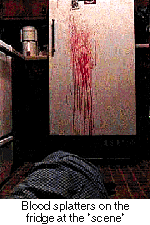

The murder of Valerie Wilson in a small Mississippi town was not the sort of crime that would capture national attention, except, perhaps, for the brutal and somewhat bizarre events surrounding her demise. Wilson's killer shot the 26-year-old aspiring actress once, then bathed her and dragged her into the kitchen, where she was repeatedly stabbed and mutilated in the lower abdomen, notes a coroner's report.
From the beginning, detectives suspected Wilson's boyfriend, Greg Giblin. Six years her junior, Giblin met Wilson in the summer of 1993. Her friends didn't seem to know him well; even his own parents were unclear where he was working. He disappeared April 2, the day Wilson's lifeless body was discovered by a neighbor.
Weeks later, the beaten and bloody body of Giblin's brother was discovered in a Miami hotel room. Had Giblin gone on a killing spree?
Detective L. Armstrong of the Yoknapatawpha County Sheriff's office was frustrated at the lack of progress in the investigation. An online enthusiast, he persuaded his superiors to let him put much of the ongoing investigation's information on a Web site at http://www.quest.net/crime/crime.html. He included interviews with witnesses and photos from the crime scene such as close-up shots of the blood-splattered refrigerator door, marijuana paraphernalia found in her bedroom and even the Prozac and birth-control pills she kept in her purse. Also included was a video snippet of a taped interview for the TV show Unsolved Mysteries with the two women who last saw Wilson alive.
While details of a more famous double murder kept some viewers glued to their TV sets, the accounts of Wilson's gruesome death captivated a quiet, growing audience. Visitors to the Web site could cull through the information and compare hair strand evidence photos. They could read a letter from the Trojan Company, tracing the lot number of an opened condom found at the scene to Oxford, Miss. convenience stores. Then, on a separate page, they see surveillance photos showing Giblin buying condoms the day before the crime.
After they finish, visitors can write in their own remarks, theories or offer tips. A few pointed out puzzling inconsistencies in the evidence. A DNA expert offered her thoughts on samples picked up at the scene. Criminology experts wordwide have presented their conclusions.
Reader comment, Oct. 5: This is a tragedy that I just happened to come across, and I'm deeply moved by the crime. It almost reads like a "Clue" game and at times I kept asking myself if it was real. It seems real enough.
All this interest in a crime investigation online would mark a breakthrough for forensic investigations, except for one thing: Wilson is not dead.
In fact, she's alive and well and living in Petaluma, Calif., where she moved with Giblin, her supposed killer in late September. Detective Armstrong? He's Tom Arriola, a 36-year-old experimental theater director who was living in Oxford when he cooked up his crime scene. "I got tired of dialogue. I wanted to find a way in which theater could incorporate drama beyond mere words and evoke emotion." At his site, viewers look at a story, watching it unfold from a variety of perspectives with a number of elements to move it forward. Nowhere in his site does Arriola note that the investigation is not real. That's part of the drama.
Without that knowledge, many visitors express their horror about such a promising life snuffed out in such a degrading fashion. Many wrote they were shocked or deeply saddened by what they had viewed.
"I used to feel bad that I tricked these people and made them upset," Arriola says. "This reminds me of when realism hit the theaters; no one knew how to react. But rules for this sort of things are not made yet. We're still teaching people the conventions of how to behave in the theater of the Web."
Wilson says she did not understand how the Web worked when Arriola approached her about playing a bloody corpse on his kitchen floor. An actress who met Arriola at the University of Mississippi, she had worked with him on other productions and learned to trust him. "Only Tom; if anyone else would have asked me, I would have thought, ÎWhat kind of freak are you?' But I was afraid at first that someone would call my mother in St. Louis and tell her that I was dead. So I had to call her first. But it's funny. When I was still living in Oxford people would come up to me and say, ÎOh, so you are alive.'"
Arriola says it wasn't his intent to deceive or fool people, but rather to draw them into the scene that he created. Part of it was inspired, he says, by his mother's interest in The Pelican Brief. Wouldn't it have been great for her to be able to go through that whole file herself, he thought?
So Arriola decided to combine it with another of his specialties, interactive theater. The names in the site are real, so are the biographical facts about Wilson and her killer. He allowed Giblin to choose how he would kill his girlfriend. "I had originally considered getting a sponsor for the site, but then he did all this sexual mutilation stuff and I realized I couldn't."
Giblin says he added the mutilation for two reasons: to get the audience emotionally involved and to add a bit of intrigue and layers of necessary elements to investigate. "For some reason, violent death seems to draw in an audience, even though that's kind of awful," Giblin says.
The site's hits varied, fluctuating from day to day. When it was selected as Cool Site of the Day, more than 100,000 visited, which crashed the server. Later, Arriola's service provider politely banned him. That wasn't his only trouble.
Prodigy unwittingly helped fuel the site's legitimacy. In late summer, the online service highlighted the site on its daily lineup, noting that it was a real murder investigation. That day, Arriola's site had more than 20,000 hits, mostly from Prodigy members. Many expressed shock at what they saw. One member found out that it wasn't authentic when she called Oxford Police and was upset to find she had been fooled.
At one point, Oxford Police got a little annoyed and considered whether Arriola could face any charges. What would they charge him with, anyway? Impersonating an officer? Fraud? Filing a "false" report? In the end, they decided he had not really broken any laws, says Oxford Police Chief Stephen Bramlett.
"Is that fraud? I don't know. Who are the victims? People who spent a little extra money downloading the stuff?" Bramlett asks. "It wasn't like he was impersonating an officer to the general public, trying to gain their confidence so that he could get some personal benefit. If we're going to charge this guy with impersonating an officer, then why don't we go arrest Don Knotts? He played Barney Fife for 20 years."
Bramlett knew immediately something was up when people started calling with offers to help their murder investigation. The quiet Mississippi town of just under 10,000 residents hasn't had a homicide since 1993. "We have one every seven years, so we're not due until the year 2000," Bramlett says. People still call, earnestly trying to offer some advice. Bramlett now just sees the whole issue as comically annoying.
|
Evil twins and mysterious comas:
Tom Arriola's next endeavor will not be as gruesome as his crime scene. Actually, fans of the show Soap will feel right at home at Arriola's new production, Ferndale. An online soap opera with a heavy dose of comedy mixed with some drama, the site will feature six eccentric characters living in a therapeutic community nestled in a naturally relaxing setting near an ominous wood.
All of the main characters will live in what Arriola calls "a digital glass house." Similar to last summer's online hit The Spot, users will have the opportunity to read the participants' journals and supplemental materials to gain entry into the Ferndale locale and mindset. But his site will go further. "Video cameras will be set up everywhere at Ferndale," Arriola says. "If someone gets a telephone call, then it will be Îrecorded' so that you can hear it on RealAudio. There will be no privacy at all." Unlike The Spot, which relied on the drama of the interpersonal relationships among the characters, "I will be the puppet master, moving all these characters and deciding what will happen," Arriola says. "If I decide I just don't like someone, I can kill them off. It's great." Also different from The Spot will be the interaction available with the "residents" of Ferndale. All of the people who check into the site will be encouraged to contact Ferndale residents directly. A full-time staff of actors representing the characters will answer their queries. The site is sponsored by Songline Productions, a joint effort by Global Network Navigator and America Online. Residents of Ferndale are tentatively slated to move into their Web site in early January at http://www.ferndale.com.
|
Many calls to both the police and to Arriola came from reporters and TV producers, from local stations to the Discovery Channel. Many journalists were duped. One reporter from a Texas paper had already booked her flight to do a story on solving crimes the 21st century way when Arriola told her, apologetically, that the site was just fiction. She canceled her trip.
 When the trio was interviewed for a Tennessee station, Giblin decided to toy with one of the reporters by acting as if the site had wrought havoc with his life. He wore dark sunglasses and told them he wished people would just leave him alone. He made it sound as if he was being hounded by people recognizing him from the site.
In reality, he's never had anyone approach him about the crime site, which may seem to indicate that online crime-stoppers may not be that effective. "I'm always waiting for some crazy hick to jump out at me screaming, ÎHey you're the one who killed that girl, you crazy bastard!' It's not like I'm waiting for a bullet, but yeah, sometimes I do worry."
Arriola believes that the news media may be one of the reasons why people are so quick to believe his site is for real. The media taught them to be gullible, he says. "When they see it on the screen, people just assume that it's true. I could take my own hometown of Schnook, Mont., and give it a 1 million population and people wouldn't question it. So many just take what's given to them at face value in this society. Doing this site made me lose faith in the news media. Maybe it's common knowledge to other people, but it didn't come to me until now."
Wilson says that when readers started responding with comments about how upset they were by what they viewed, she felt sad. After all, these were nice people simply concerned that her life had ended so tragically.
"It's interesting how willing people are to believe what they see. I felt kind of bad since I was supposed to be the dead person; some were really concerned about what happened to me," Wilson says. "But what can you do? It has to look real. If Tom had put a disclaimer at the top, it would not have been as compelling."
Readers alone did not just fall for the site. America's Most Wanted repeatedly called and e-mailed Arriola, asking him to help put the Wilson case on their show, he says. Arriola reluctantly talked to them after avoiding one of their producers, then told them it was not a real case. "They kept asking how I had arranged to release so much information with the district attorney's office. I think they were upset at first, but then they kept asking us a lot of questions about how we did it and what it took to get it online. Maybe they will do it themselves."
Sept. 9, reader's comment: This guy is obviously a psycho. I hope you catch him.
Arriola doesn't know if the murder of Karen Wilson will ever be solved or even have a conclusion. He thinks of it as sort of an online Twin Peaks, a show he wished had not decided to wrap up all the odd, loose ends. Instead, Twin Peaks creators ought to have let that story go without closure, Arriola says.
He expects it to end the way it started, on something of a whim. Perhaps Giblin will jump off the Golden Gate Bridge. Arriola moved to San Francisco in late September to start a new Web site for Songline Productions (see sidebar). The producers there hired Arriola based on his handiwork on the crime scene site and offered him a job putting together one of their new high-profile interactive sites. In a way, it shows another of the Internet's odd capabilities: It allowed an experimental theater director in a small rural town in Mississippi to get a job on the other side of the United States simply by putting up a page on the Web.
As the trio traveled to California, they stopped at tourist attractions to take photos. "We would stand
near real families lined up for shots at places like the Grand Canyon. Then Giblin would walk in the
background and we'd snap it. We plan to put it up on the site and pretend someone sent it into the
police department. You know, like ÎHey, we were on vacation, got our photos back and this guy looks
sort of like the killer.' Then have people copy that person's actions by sending in more photos."
Arriola's noticed that since he put up the site, more law-enforcement organizations seem to have established a presence on the Web. While his site chronicled a false crime, he thinks it's only a matter of time before legitimate groups, including America's Most Wanted, detail crimes and wanted killers in a similar fashion. "This will happen for real one day. Sooner or later. Life imitating art. It happens all the time."
Sunday, Aug. 27: Dear sirs, I think you guys are great in putting this on the Web. It's America's Most Wanted gone multimedia. We will probably see a lot more of this in the future. All police departments establishing a home page on the 'net. The links covering unsolved crimes on through to various public-relations projects will work wonders for law enforcement. Will AMW profile the case as well, or has it already been featured? Good luck in putting this case down.
Response: We have been contacted by "America's Most Wanted." They have not scheduled the case for investigation.